|
|
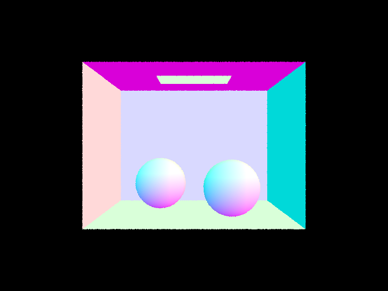
|
In this project, we implemented ray tracing methods. We started from constructing BVH, a data structure that allows us to compute ray intersection with objects faster. We then first implemeneted direct lighting, which are lights that directly come from a light source. Then we implemented one bounce illumination, which are the lights that bounce off from other objects. We also implemented Russian Roulette and Adaptive sampling to enable more efficient rendering.
The Camera::generate_ray(...) function takes in (x, y) in image coordinates and output a ray with origin and direction in the world space.
To do this, we first compute a i2c matrix that transfer a homogenous 2D coordinates in image space to a homogenous 2D coordinates in the camera space.
The i2c matrix is defined so that bottom left corner, $(0, 0)$, transfers to $(-tan(\frac{hFov}{2}), -tan(\frac{vFov}{2})) $,
and the upper right corner, $(1, 1)$, transfers to $(tan(\frac{hFov}{2}), tan(\frac{vFov}{2})) $.
Since in the camera space, the z coordinates is always -1, we set the z axis of our point to -1, after applying i2c, transforming it into camera space.
We then generate the ray with the camera position in the world space as origin
and with direction pointing from $(0, 0, 0)$ to our point in camera space normalized and transformed into the world space.
We also set the max_t and min_t of the ray.
The PathTacer::raytrace_pixel function is used to estimate the radiance at each pixel.
To achieve this, we first generate ns_aa number of rays that originate at the camera and passes through the pixel at the given point with some random offset on an image.
We use the Camera::generate_ray(...) function to do so.
We follow each ray to estimate the radiance.
We sum all radiances and store the average value into sampleBuffer.
To test intersection with triangle, we solve for time t when ray intersects with the plane in which the triangle lies. The intersection is only valid when the following two conditions is met:
To test intersection with spheres, we solve for time t when ray intersects the sphere. We solve the quadratic function, and there're three possible outcomes:
|
|
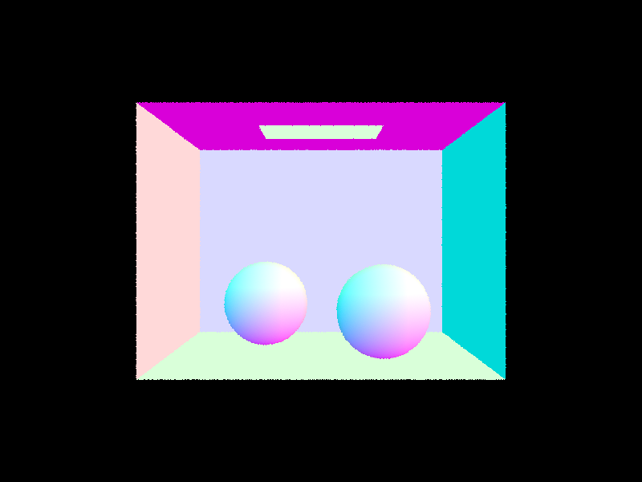
|
We build our BVH resursively. Our algorithm partitions the primitives into two groups and recursively applies the algorithm to each group until the number of primitives left is smaller than maximum_leaf_size. We always choose the split primitives along the axis with the largest range difference. In this way, we will most effeciently decrease the range of the bounding box for the BVHNode in next level. The group that each primitives belong to is determined by comparing each primitive's centroid to the mean centroid of all primitives. If the primitive centroid is smaller than the mean centroid, the primitive belongs to the left group, otherwise, it belongs to the right. In each recursive call, we build a BVHNode. A leaf BVHNode will store all primitives it contains, while a non-leaf node stores left and right pointer to the BVHNode built on its left and right primitive groups.
|
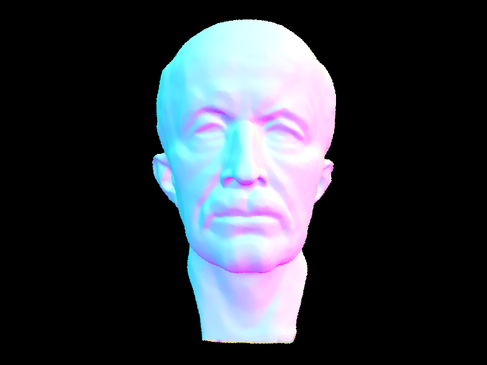
|
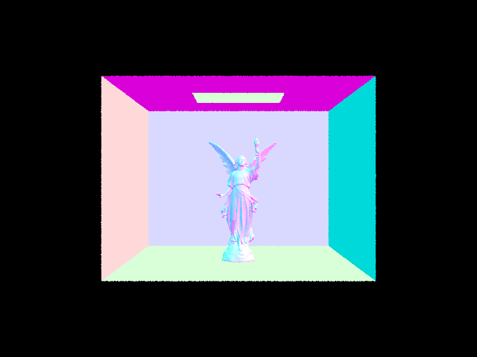
|
| Scene | Without BVH | With BVH |
|---|---|---|
| Cow | 25.2083s | 0.1387s |
| MaxPlanck | 219.0163s | 0.1730s |
| CBLucy | 1330.6861s | 0.2100s |
As we can see, when rendering moderately complex scenes, using BVH acceleration can significantly reduce rendering times. Without BVH acceleration, the render would need to test each primitive in the scene individually, leading to much longer rendering times. With BVH acceleration, the hierarchy allows the render to more quickly determine which objects the ray could potentially intesect, reducing the number of tests needed and resulting in faster rendering times. The speed up is most significant in scenes with higher complexity.
Hemisphere sampling: To estimate how much light were reflected at the given intersetion
point (hit_p), we first estimate how much light arrived at the point. In this approach,
we implemented it by uniformly sampling the hemisphere around hit_p to get the possible rays
that might hit the intersection (blue rays below in the illustration).
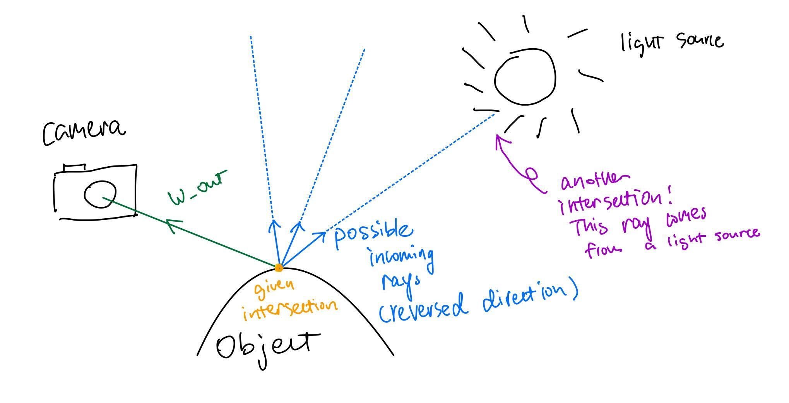
We then test if the ray intersects the scene. If it does, we have obtained the necessary components to calculate radiance from the intersection with this formula:
Importance sampling: We still need to estimate how much light arrived at the point, but instead of uniformly sampling
from a hemisphere, we instead will sample the light directly. SceneLight::sample_L(Vector3D& p, Vector3D* wi, double* distToLight, double* pdf)
takes 1 sample, and returns the sampled ray (between the object and the light source direction), the sampled emittance,
distance from the object to the light source and the pdf of the sampled direction. We can then use the distance
from the object to the lightsource, and check if the ray intersects any surface in front of the light source within this range (between the light source
and the object). If there is, then the light doesn't really cast any radiance to the object. If there isn't then we calculate
radiance from that field with the same technique as above.
| Uniform Hemisphere Sampling | Light Sampling |
|---|---|
|
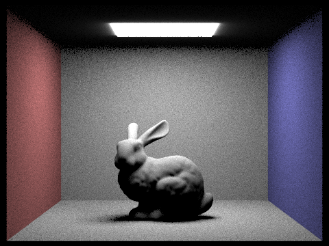
|
|
|
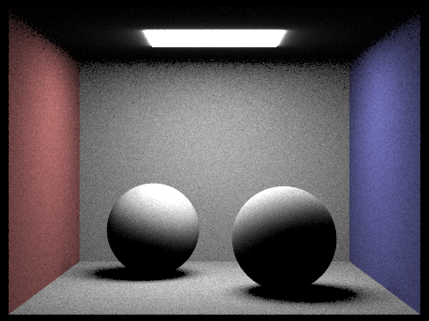
|
|
|
|
|
|
|
|
Hemisphere sampling produced a more grainy result, and the details were not as good as importance sampling. There is also less noise on importance sampling result. This was very obvious in the background -- hemisphere sampling produced a coarse background, while importance sampling produced a smoother one. This could be due to the fact that hemisphere sampling takes in vectors from all directions with equal weight, but only a few rays are contributing to the final radiance, while importance sampling weighted them with their probability.
We implemented the PathTracer::at_least_one_bounce_radiance function to achieve global illumination with ray bouncing multiple times in the scene.
We first account for cases where max_ray_depth is 0 or 1 in the PathTracer::est_radiance_global_illumination function.
Then, inside PathTracer::at_least_one_bounce_radiance function, we first calculate the onc_bounce_radiance at the hit point, and sample a direction and its corresponding next intersection point with
DiffuseBSDF::sample_f.
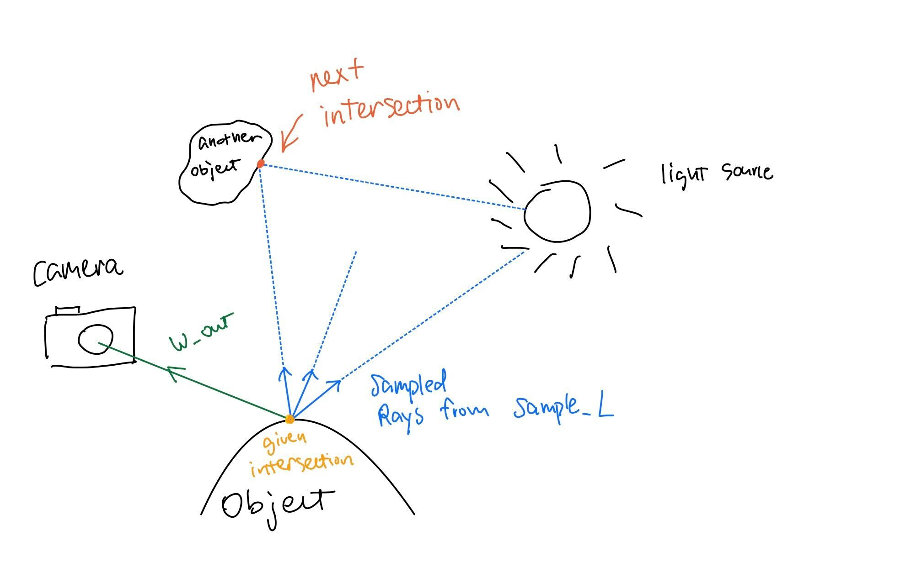
The next intersection is where light would bounce to, or come from, since in ray tracing, we are doing it backwards. And then we check for conditions to continue the recursion:PathTracer::at_least_one_bounce_radiance function recursively on the newly initiated ray and next intersection point
and use the reflection function to add the next bounce radiance to current radiance.
|
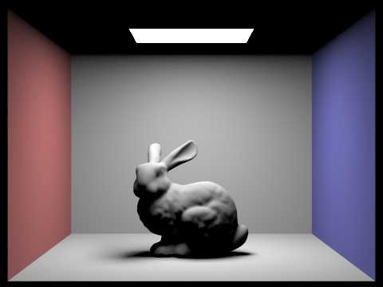
|
|
|
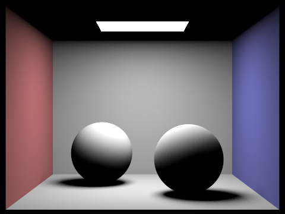
|
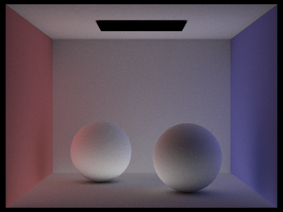
|
Direct illumination refers to light that comes directly from light sources and shines onto an object,
while indirect illumination refers to light that has bounced off other objects and illuminates an object indirectly.
The scene above rendered with only direct illumination have very strong and defined shadows,
with objects that are not directly illuminated appearing very dark or even black.
The overall lighting in the scene is very dependent on the placement of the light sources.
On the other hand, the scene rendered with only indirect illumination have much softer shadows and a more diffused, natural lighting.
The scene has a more diffused and natural lighting, as light bounces around the environment and illuminates objects from various angles.
|
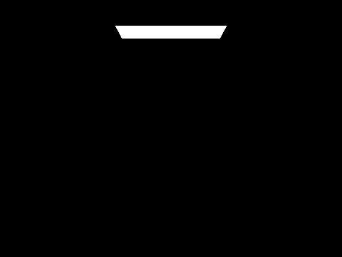
|
|
|
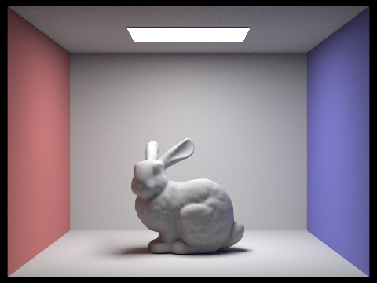
|
|
|
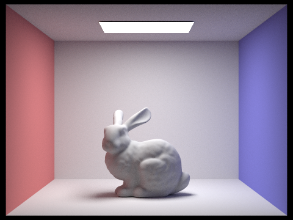
|
The max_ray_depth parameter determines the maximum number of times that a light ray can bounce off surfaces in a scene before it is terminated.
When max_ray_depth is set to 0, the rendered view will only show the light source itself.
And when max_ray_depth is set to 1, the rendered view shows only direct illumination.
Then, as the value of max_ray_depth is increases, the rendered view gets brighter, as light rays bounce off surfaces in the scene more times.
This leads to more diffuse lighting and softer shadows, as well as a greater sense of depth and realism in the scene.
However, increasing max_ray_depth beyond a certain point can lead to diminishing returns,
as the effect of indirect illumination becomes less noticeable with each additional bounce.
In the above scene, the image rendered with max_ray_depth set to 3 and max_ray_depth set to 100 is already very similar.
And the rendering process becomes significantly slower without a significant increase in visual quality.
|
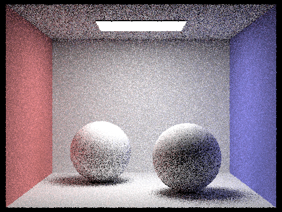
|
|
|
|
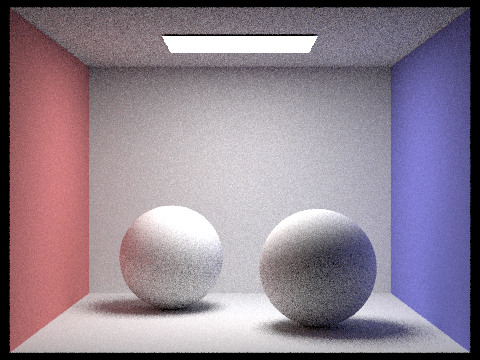
|
|
|
|
|
|
The sample-per-pixel rate is the number of samples taken by the render for each pixel in the rendered image. As we can observe from above, images get smoother and less noisier as we increase the sample-per-pixel rate. This makes sense intuitively since as more samples are taken, lighting and material properties of the scene is better captured.
Adaptive sampling is when we don't sample all the pixels all the way to the maximum number of samples that we set. This is because some pixels coverges very fast,
so we don't need to compute further samples after it converges. However, some other pixels might need more samples. The threshold that we used to determine if
a pixel needs further sampling is by checking whether \(I \leq maxTolerance * \mu\), where \(I = 1.96* \frac{\sigma}{\sqrt{n}}\). \(\mu = \frac{s1}{n}\), \(\sigma^2 =
\frac{1}{n-1}*(s_2-\frac{s1^2}{n})\), \(s_2 = \sum{x_k^2}\), \(s1= \sum{x_k}\). \(x_k\) is the illuminance of each sample. For every samplesPerBatch
number of samples, we perform this check to see if the pixel has converged, and if so, we stop estimating the radiance for the pixel.
|
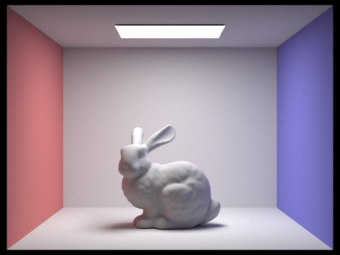
|
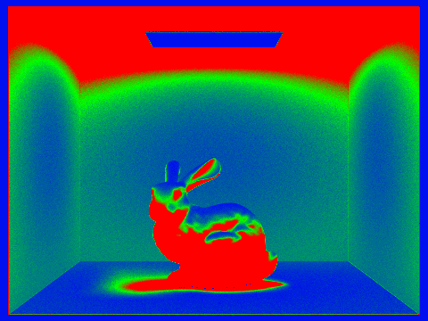
|
|
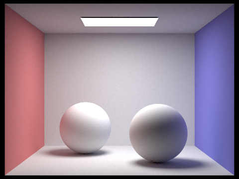
|
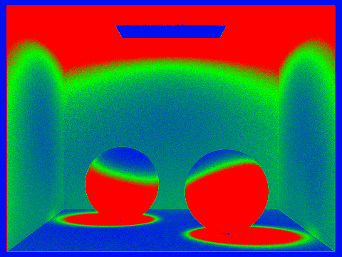
|
As you can see, different areas now have different sampling rates. Red indicates high sampling rate, and blue indicates low sampling rate.